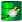

Docs for ‘QGIS testing’. Visit http://docs.qgis.org/2.14 for QGIS 2.14 docs and translations.
eVis Plugin¶
(This section is derived from Horning, N., K. Koy, P. Ersts. 2009. eVis (v1.1.0) User’s Guide. American Museum of Natural History, Center for Biodiversity and Conservation. Available from http://biodiversityinformatics.amnh.org/, and released under the GNU FDL.)
The Biodiversity Informatics Facility at the American Museum of Natural History’s (AMNH) Center for Biodiversity and Conservation (CBC) has developed the Event Visualization Tool (eVis), another software tool to add to the suite of conservation monitoring and decision support tools for guiding protected area and landscape planning. This plugin enables users to easily link geocoded (i.e., referenced with latitude and longitude or X and Y coordinates) photographs, and other supporting documents, to vector data in QGIS.
eVis is now automatically installed and enabled in new versions of QGIS, and as with all plugins, it can be disabled and enabled using the Plugin Manager (see The Plugins Dialog).
The eVis plugin is made up of three modules: the ‘Database Connection tool’, ‘Event ID tool’, and the ‘Event Browser’. These work together to allow viewing of geocoded photographs and other documents that are linked to features stored in vector files, databases, or spreadsheets.
Event Browser¶
The Event Browser module provides the functionality to display geocoded photographs that are linked to vector features displayed in the QGIS map window. Point data, for example, can be from a vector file that can be input using QGIS or it can be from the result of a database query. The vector feature must have attribute information associated with it to describe the location and name of the file containing the photograph and, optionally, the compass direction the camera was pointed when the image was acquired. Your vector layer must be loaded into QGIS before running the Event Browser.
Launch the Event Browser module¶
To launch the Event Browser module, click on Database ‣ eVis ‣ eVis Event Browser. This will open the Generic Event Browser window.
The Event Browser window has three tabs displayed at the top of the window. The Display tab is used to view the photograph and its associated attribute data. The Options tab provides a number of settings that can be adjusted to control the behavior of the eVis plugin. Lastly, the Configure External Applications tab is used to maintain a table of file extensions and their associated application to allow eVis to display documents other than images.
Understanding the Display window¶
To see the Display window, click on the Display tab in the Event Browser window. The Display window is used to view geocoded photographs and their associated attribute data.
Figure eVis 1:
The eVis display window
- Display window: A window where the photograph will appear.
- Zoom in button: Zoom in to see more detail. If the entire image cannot be displayed in the display window, scroll bars will appear on the left and bottom sides of the window to allow you to pan around the image.
- Zoom out button: Zoom out to see more area.
- Zoom to full extent button: Displays the full extent of the photograph.
- Attribute information window: All of the attribute information for the point associated with the photograph being viewed is displayed here. If the file type being referenced in the displayed record is not an image but is of a file type defined in the Configure External Applications tab, then when you double-click on the value of the field containing the path to the file, the application to open the file will be launched to view or hear the contents of the file. If the file extension is recognized, the attribute data will be displayed in green.
- Navigation buttons: Use the Previous and Next buttons to load the previous or next feature when more than one feature is selected.
Understanding the Options window¶
Figure eVis 2:
The eVis Options window
- File path: A drop-down list to specify the attribute field that contains the directory path or URL for the photographs or other documents being displayed. If the location is a relative path, then the checkbox must be clicked. The base path for a relative path can be entered in the Base Path text box below. Information about the different options for specifying the file location are noted in the section Specifying the location and name of a photograph below.
- Compass bearing: A drop-down list to specify the attribute field that contains the compass bearing associated with the photograph being displayed. If compass bearing information is available, it is necessary to click the checkbox below the drop-down menu title.
- Compass offset: Compass offsets can be used to compensate for
declination (to adjust bearings collected using magnetic bearings to true north
bearings). Click the
 Manual radio button to enter
the offset in the text box or click the
From Attribute radio button to select the attribute field
containing the offsets. For both of these options, east declinations should
be entered using positive values, and west declinations should use negative
values.
Manual radio button to enter
the offset in the text box or click the
From Attribute radio button to select the attribute field
containing the offsets. For both of these options, east declinations should
be entered using positive values, and west declinations should use negative
values. - Directory base path: The base path onto which the relative path defined in Figure_eVis_2 (A) will be appended.
- Replace path: If this checkbox is checked, only the file name from A will be appended to the base path.
- Apply rule to all documents: If checked, the same path rules that are defined for photographs will be used for non-image documents such as movies, text documents, and sound files. If not checked, the path rules will only apply to photographs, and other documents will ignore the base path parameter.
- Remember settings: If the checkbox is checked, the values for the associated parameters will be saved for the next session when the window is closed or when the [Save] button below is pressed.
- Reset values: Resets the values on this line to the default setting.
- Restore defaults: This will reset all of the fields to their default settings. It has the same effect as clicking all of the [Reset] buttons.
- Save: This will save the settings without closing the Options pane.
Understanding the Configure External Applications window¶
Figure eVis 3:
The eVis External Applications window
- File reference table: A table containing file types that can be opened using eVis. Each file type needs a file extension and the path to an application that can open that type of file. This provides the capability of opening a broad range of files such as movies, sound recordings, and text documents instead of only images.
- Add new file type: Add a new file type with a unique extension and the path for the application that can open the file.
- Delete current row: Delete the file type highlighted in the table and defined by a file extension and a path to an associated application.
Specifying the location and name of a photograph¶
The location and name of the photograph can be stored using an absolute or relative path, or a URL if the photograph is available on a web server. Examples of the different approaches are listed in Table evis_examples.
X Y FILE BEARING
780596 1784017 C:\Workshop\eVis_Data\groundphotos\DSC_0168.JPG 275
780596 1784017 /groundphotos/DSC_0169.JPG 80
780819 1784015 http://biodiversityinformatics.amnh.org/\
evis_testdata/DSC_0170.JPG 10
780596 1784017 pdf:http://www.testsite.com/attachments.php?\
attachment_id-12 76
Specifying the location and name of other supporting documents¶
Supporting documents such as text documents, videos, and sound clips can also be displayed or played by eVis. To do this, it is necessary to add an entry in the file reference table that can be accessed from the Configure External Applications window in the Generic Event Browser that matches the file extension to an application that can be used to open the file. It is also necessary to have the path or URL to the file in the attribute table for the vector layer. One additional rule that can be used for URLs that don’t contain a file extension for the document you want to open is to specify the file extension before the URL. The format is — file extension:URL. The URL is preceded by the file extension and a colon; this is particularly useful for accessing documents from wikis and other web sites that use a database to manage the web pages (see Table evis_examples).
Using the Event Browser¶
When the Event Browser window opens, a photograph will appear in the display window if the document referenced in the vector file attribute table is an image and if the file location information in the Options window is properly set. If a photograph is expected and it does not appear, it will be necessary to adjust the parameters in the Options window.
If a supporting document (or an image that does not have a file extension recognized by eVis) is referenced in the attribute table, the field containing the file path will be highlighted in green in the attribute information window if that file extension is defined in the file reference table located in the Configure External Applications window. To open the document, double-click on the green-highlighted line in the attribute information window. If a supporting document is referenced in the attribute information window and the file path is not highlighted in green, then it will be necessary to add an entry for the file’s filename extension in the Configure External Applications window. If the file path is highlighted in green but does not open when double-clicked, it will be necessary to adjust the parameters in the Options window so the file can be located by eVis.
If no compass bearing is provided in the Options window, a red asterisk will be displayed on top of the vector feature that is associated with the photograph being displayed. If a compass bearing is provided, then an arrow will appear pointing in the direction indicated by the value in the compass bearing display field in the Event Browser window. The arrow will be centered over the point that is associated with the photograph or other document.
To close the Event Browser window, click on the [Close] button from the Display window.
Event ID Tool¶
The ‘Event ID’ module allows you to display a photograph by clicking on a feature displayed in the QGIS map window. The vector feature must have attribute information associated with it to describe the location and name of the file containing the photograph and, optionally, the compass direction the camera was pointed when the image was acquired. This layer must be loaded into QGIS before running the ‘Event ID’ tool.
Launch the Event ID module¶
To launch the ‘Event ID’ module, either click on the Event ID icon or click on Database ‣ eVis ‣ Event ID Tool. This will cause the cursor to change to an arrow with an ‘i’ on top of it signifying that the ID tool is active.
{kind=link}
To view the photographs linked to vector features in the active vector layer displayed in the QGIS map window, move the Event ID cursor over the feature and then click the mouse. After clicking on the feature, the Event Browser window is opened and the photographs on or near the clicked locality are available for display in the browser. If more than one photograph is available, you can cycle through the different features using the [Previous] and [Next] buttons. The other controls are described in the Event Browser section of this guide.
Database connection¶
The ‘Database Connection’ module provides tools to connect to and query a database or other ODBC resource, such as a spreadsheet.
eVis can directly connect to the following types of databases: PostgreSQL, MySQL, and SQLite; it can also read from ODBC connections (e.g., MS Access). When reading from an ODBC database (such as an Excel spreadsheet), it is necessary to configure your ODBC driver for the operating system you are using.
Launch the Database Connection module¶
To launch the ‘Database Connection’ module, either click on the appropriate icon  eVis Database Connection or click on Database ‣ eVis ‣ Database Connection. This will launch the Database Connection window. The window has three tabs: Predefined Queries, Database Connection, and SQL Query. The Output Console window at the bottom of the window displays the status of actions initiated by the different sections of this module.
{kind=link}
Connect to a database¶
Click on the Database Connection tab to open the database
connection interface. Next, use the Database Type  combo box to select the type of database that you want to connect to. If a
password or username is required, that information can be entered in the
Username and Password textboxes.
combo box to select the type of database that you want to connect to. If a
password or username is required, that information can be entered in the
Username and Password textboxes.
Enter the database host in the Database Host textbox. This option is not available if you selected ‘MS Access’ as the database type. If the database resides on your desktop, you should enter “localhost”.
Enter the name of the database in the Database Name textbox. If you selected ‘ODBC’ as the database type, you need to enter the data source name.
When all of the parameters are filled in, click on the [Connect] button. If the connection is successful, a message will be written in the Output Console window stating that the connection was established. If a connection was not established, you will need to check that the correct parameters were entered above.
Figure eVis 4:
The eVis Database connection window
- Database Type: A drop-down list to specify the type of database that will be used.
- Database Host: The name of the database host.
- Port: The port number if a MySQL or PostgreSQL database type is selected.
- Database Name: The name of the database.
- Connect: A button to connect to the database using the parameters defined above.
- Output Console: The console window where messages related to processing are displayed.
- Username: Username for use when a database is password protected.
- Password: Password for use when a database is password protected.
- Predefined Queries: Tab to open the “Predefined Queries” window.
- Database Connection: Tab to open the “Database Connection” window.
- SQL Query: Tab to open the “SQL Query” window.
- Help: Displays the online help.
- OK: Closes the main “Database Connection” window.
Running SQL queries¶
SQL queries are used to extract information from a database or ODBC resource. In eVis, the output from these queries is a vector layer added to the QGIS map window. Click on the SQL Query tab to display the SQL query interface. SQL commands can be entered in this text window. A helpful tutorial on SQL commands is available at http://www.w3schools.com/sql. For example, to extract all of the data from a worksheet in an Excel file, select * from [sheet1$] where sheet1 is the name of the worksheet.
Click on the [Run Query] button to execute the command. If the query is successful, a Database File Selection window will be displayed. If the query is not successful, an error message will appear in the Output Console window.
In the Database File Selection window, enter the name of the layer that will be created from the results of the query in the Name of New Layer textbox.
Figure eVis 5:
The eVis SQL query tab
- SQL Query Text Window: A screen to type SQL queries.
- Run Query: Button to execute the query entered in the SQL Query Window.
- Console Window: The console window where messages related to processing are displayed.
- Help: Displays the online help.
- OK: Closes the main Database Connection window.
Use the X Coordinate and Y Coordinate
combo boxes to select the fields from the database that stores the
X (or longitude) and Y (or latitude) coordinates. Clicking on the [OK]
button causes the vector layer created from the SQL query to be displayed in the
QGIS map window.
To save this vector file for future use, you can use the QGIS ‘Save as...’ command that is accessed by right-clicking on the layer name in the QGIS map legend and then selecting ‘Save as...’
Tip
Creating a vector layer from a Microsoft Excel Worksheet
When creating a vector layer from a Microsoft Excel Worksheet, you might see that unwanted zeros (“0”) have been inserted in the attribute table rows beneath valid data. This can be caused by deleting the values for these cells in Excel using the Backspace key. To correct this problem, you need to open the Excel file (you’ll need to close QGIS if you are connected to the file, to allow you to edit the file) and then use Edit ‣ Delete to remove the blank rows from the file. To avoid this problem, you can simply delete several rows in the Excel Worksheet using Edit ‣ Delete before saving the file.
Running predefined queries¶
With predefined queries, you can select previously written queries stored in XML format in a file. This is particularly helpful if you are not familiar with SQL commands. Click on the Predefined Queries tab to display the predefined query interface.
To load a set of predefined queries, click on the  Open File
icon. This opens the Open File window, which is used to locate the file
containing the SQL queries. When the queries are loaded, their titles as
defined in the XML file will appear in the drop-down menu located just below
the Open File icon. The full description of the query is
displayed in the text window under the drop-down menu.
Open File
icon. This opens the Open File window, which is used to locate the file
containing the SQL queries. When the queries are loaded, their titles as
defined in the XML file will appear in the drop-down menu located just below
the Open File icon. The full description of the query is
displayed in the text window under the drop-down menu.
Select the query you want to run from the drop-down menu and then click on the SQL Query tab to see that the query has been loaded into the query window. If it is the first time you are running a predefined query or are switching databases, you need to be sure to connect to the database.
Click on the [Run Query] button in the SQL Query tab to execute the command. If the query is successful, a Database File Selection window will be displayed. If the query is not successful, an error message will appear in the Output Console window.
Figure eVis 6:
The eVis Predefined Queries tab
- Open File: Launches the “Open File” file browser to search for the XML file holding the predefined queries.
- Predefined Queries: A drop-down list with all of the queries defined by the predefined queries XML file.
- Query description: A short description of the query. This description is from the predefined queries XML file.
- Console Window: The console window where messages related to processing are displayed.
- Help: Displays the online help.
- OK: Closes the main “Database Connection” window.
XML format for eVis predefined queries¶
The XML tags read by eVis
| Tag | Description |
|---|---|
| query | Defines the beginning and end of a query statement. |
| shortdescription | A short description of the query that appears in the eVis drop-down menu. |
| description | A more detailed description of the query displayed in the Predefined Query text window. |
| databasetype | The database type, defined in the Database Type drop-down menu in the Database Connection tab. |
| databaseport | The port as defined in the Port text box in the Database Connection tab. |
| databasename | The database name as defined in the Database Name text box in the Database Connection tab. |
| databaseusername | The database username as defined in the Username text box in the Database Connection tab. |
| databasepassword | The database password as defined in the Password text box in the Database Connection tab. |
| sqlstatement | The SQL command. |
| autoconnect | A flag (“true”” or “false”) to specify if the above tags should be used to automatically connect to the database without running the database connection routine in the Database Connection tab. |
A complete sample XML file with three queries is displayed below:
<?xml version="1.0"?>
<doc>
<query>
<shortdescription>Import all photograph points</shortdescription>
<description>This command will import all of the data in the SQLite database to QGIS
</description>
<databasetype>SQLITE</databasetype>
<databasehost />
<databaseport />
<databasename>C:\textbackslash Workshop/textbackslash
eVis\_Data\textbackslash PhotoPoints.db</databasename>
<databaseusername />
<databasepassword />
<sqlstatement>SELECT Attributes.*, Points.x, Points.y FROM Attributes LEFT JOIN
Points ON Points.rec_id=Attributes.point_ID</sqlstatement>
<autoconnect>false</autoconnect>
</query>
<query>
<shortdescription>Import photograph points "looking across Valley"</shortdescription>
<description>This command will import only points that have photographs "looking across
a valley" to QGIS</description>
<databasetype>SQLITE</databasetype>
<databasehost />
<databaseport />
<databasename>C:\Workshop\eVis_Data\PhotoPoints.db</databasename>
<databaseusername />
<databasepassword />
<sqlstatement>SELECT Attributes.*, Points.x, Points.y FROM Attributes LEFT JOIN
Points ON Points.rec_id=Attributes.point_ID where COMMENTS='Looking across
valley'</sqlstatement>
<autoconnect>false</autoconnect>
</query>
<query>
<shortdescription>Import photograph points that mention "limestone"</shortdescription>
<description>This command will import only points that have photographs that mention
"limestone" to QGIS</description>
<databasetype>SQLITE</databasetype>
<databasehost />
<databaseport />
<databasename>C:\Workshop\eVis_Data\PhotoPoints.db</databasename>
<databaseusername />
<databasepassword />
<sqlstatement>SELECT Attributes.*, Points.x, Points.y FROM Attributes LEFT JOIN
Points ON Points.rec_id=Attributes.point_ID where COMMENTS like '%limestone%'
</sqlstatement>
<autoconnect>false</autoconnect>
</query>
</doc>